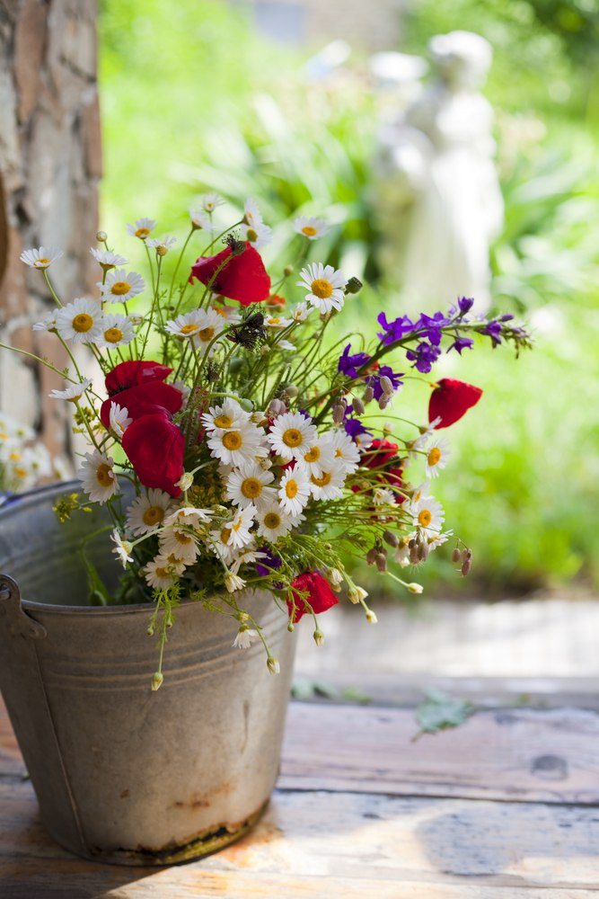
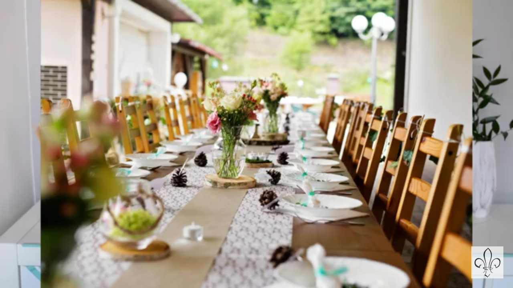
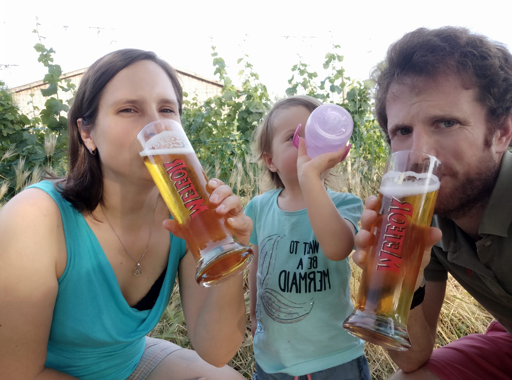

 Journée libre, ceux qui veulent nous donner un coup de main sont les bienvenus ! Il y aura un notamment un atelier décorations et un atelier cuisine.
Nous aurons aussi peut être besoin d’un petit coup de main le matin, pour ceux qui veulent ! Au programme, installer des tables et des guirlandes pour le vin d’honneur.
Attention, les tchèques ne rigolent pas avec la ponctualité, le rendez-vous est à 14h40 devant les portes du Pantheon. Pour vous y rendre, plusieurs options :
Cérémmonie, en plein soleil s’il fait beau, durée d'environ 30min.
Nous vous invitons par contre à rentrer à pieds tous ensemble par les chemins forestiers (environ 2 km, 35 minutes). Quitte à nous répéter, ne prévoyez pas forcément vos plus beaux souliers vernis pour la cérémonie !
Nous aurons un vin d’honneur/apéro à partir de 16h30 puis le dîner et les autres réjouissances !
Nous aurons encore la Penzion pour nous, petit déjeuner/brunch/jeux/piscine/visites, tout est possible !